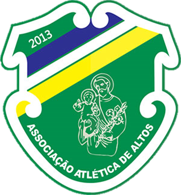
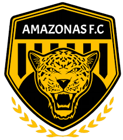
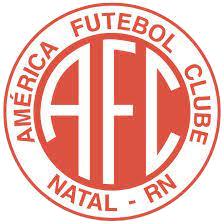
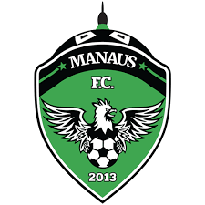
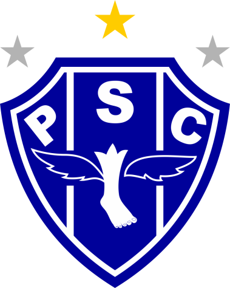
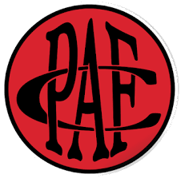

-
Altos
- 2013
Eu sou o Altos, sou altoense Eu sou o Altos de coração Com toda garra represento a nossa gente A nossa sina é ser sempre campeão Com muita raça e muito amor, jogamos com fé Nosso santo e padroeiro é São José Bato no peito com orgulho, pois nós somos daqui Somos um time vencedor do Piauí Resgatando a alto estima do povo altoense Jacaré guerreiro vencedor Honraremos nossa gente tão querida Altos eu te amo meu amor
-
Amazonas
- 2019
Na zona leste o amarelo é tradição A forte onça é o mais novo campeão A tua garra e tua força no esporte Te faz temido e coroado o mais forte! Teu pavilhão são de feitos na história Os 11 heróis sempre dão sangue nos gramados Tuas conquistas se eternizam na memória Meu Amazonas, campeão predestinado! Dentro de campo és potente e imbatível Em vibração tua torcida é invencível A tua estrela é mais um título de glória Avante onça, o seu alento é a vitória Teu pavilhão são de feitos na história Os 11 heróis sempre dão sangue nos gramados Tuas conquistas se eternizam na memória Meu Amazonas, campeão predestinado Tu és o orgulho do esporte regional No Amazonas és temido, és imortal Pelos gramados do Brasil para vencer Eu estarei sempre contigo até morrer Teu pavilhão são de feitos na história Os 11 heróis sempre dão sangue nos gramados Tuas conquistas se eternizam na memória Meu Amazonas, campeão predestinado
-
América-RN
- 1915
O nosso time mostra a sua raça no jogo É o América, América Vai conquistando o coração do povo no jogo E na torcida eu sou América Eu sou América e tenho orgulho de ser Porque o América em tudo é o melhor É alegria no esporte e no futebol América, América É alegria no esporte e no futebol América,América Meu coração vibra nas suas cores Eu sou América, América É uma canção que canta mil amores, enfim Cantou América, América Vamos em frente gente Americana Mostrar que o nosso time entrou pra valer Bola pra frente, quero ver jogando pra ganhar América, América
-
Aparecidense

- 1985
É o azul e branco, que faz o meu coração bater pelaAparecidense que nasceu pra vencer. É o azul e branco, que faz o meu coração bater pela Aparecidense que nasceu pra vencer. Desde 1985 a Aparecidense faz parte da nossa vida É o orgulho da cidade de Aparecida É garra, é amor, é a nossa emoção Sou Aparecidense de coração É garra, é amor, é a nossa emoção Sou Aparecidense de coração Tocando de pé em pé A gente chega junto com a Aparecidense Onde o azul e branco estiver
-
Botafogo-PB

- 1931
Botafogo Paraibano Você é o mais Belo e glorioso Que enche de alegria o seu povo Com tantas glórias e tantas vitórias! Branca, preta e vermelha Do tricolor do contorno são as cores Que vibram nas mãos dos torcedores Em forma de lindas bandeiras Vamos ganhar o jogo sim! Vamos dar um olé! Encher os olhos desse povo todo Que está lotando o Almeidão! O nosso Tricolor é sempre campeão Porque nosso timão tem muito mais vigor!
-
Brusque

- 1987
Sempre joga pra vencer Nosso time faz tremer Meu Bruscão do coração Mais que um clube, uma paixão O meu time é campeão Meu Bruscão do coração Surge um Brusque entre os gigantes E dando alegria para uma nação É o vermelho, verde, branco e amarelo A cor do meu Bruscão Brusque, meu Bruscão! Glorioso e campeão Salve, Brusque imortal! Minha paixão natural Brusque, meu Bruscão! Glorioso e campeão Tua torcida vibrante e guerreira Eu serei Brusque a vida inteira
-
Confiança

- 1936
Quem é o campeão dos campeões, que no gramado mantém sua glória, é a Desportiva Confiança, dos operários tem o nome a vitória, sua bandeira com alvi-anil, sou Confiança em todo Brasil, Tua luta continuará, outras taças, Iremos conquistar, essa é a realidade, quem foi rei sempre é majestade.
-
CSA

- 1913
Pela pátria, na vida esportiva É que vamos sempre conquistar Nossa glória da luta deriva É o campeão dos campeões CSA Azulinos impávidos e fortes Enfrentemos os nossos rivais Nosso time não tem adversários Não seremos vencidos jamais Centro Sportivo Alagoano No Mutange eterno vencedor Se tremulas a tua bandeira Alvi-celeste é com amor Nesse anseio infinito de glória Esse Centro Sportivo não tem A vaidade que é sempre ilusória E que nunca elevou à ninguém Vamos todos em busca das vitórias Com o coração na ponta das chuteiras União e Força CSA Azul e Branco a vida inteira Centro Sportivo Alagoano No Mutange eterno vencedor Se tremulas a tua bandeira Alvi-celeste é com amor
-
Figueirense

- 1921
Avante Figueirense Pra frente Furacão S’embora Esquadrão de Aço És tesouro do meu coração Tua torcida é garra, é empolgação Vejo em ti pujança De um grande esquadrão Por ti torcemos Por isso somos alvinegros A força do Scarpellão Por ti torcemos Por ti vibramos Figueirense És o nosso campeão
-
Floresta

- 1954
Foi no dia Nove de Novembro Nasceu o meu time pra ser campeão É nosso Floresta Esporte Clube Vai pra cima deles força verdão Meu time verdão de guerreiros No Ceará não tem pra ninguém Vamos Floresta querido Fazer a alegria também Avante sempre Verdão Pra sempre ser Campeão Avante sempre Verdão Pra sempre ser Campeão
-
Manaus
- 2013
Manaus, Manaus, Manaus… teu Gavião Real chegou! Em verde, preto e branco estas são as cores do clube vencedor. O Teatro Amazonas rebrilha com a luz da chama do esplendor na grande floresta e igarapés ecoa o brado dos grandes Barés Cinco de maio de 2013 no futebol surge o campeão. Vibra a torcida, sempre aguerrida o pulso forte dessa nação. E entre lutas e desafios Manaus é raça, verde coração! Ah! Quantas vitórias que virão. Sei, sou feliz, tenho razão. Voa, voa Gavião do Norte, tu és Guerreiro, tu és forte! Eu sou Manaus, sempre vou vencer! Eu sou Manaus, sempre vou vencer! Eu sou Manaus… Sempre vou vencer!
-
Náutico

- 1901
Da união de duas cores mágicas Nasceu a força e a raça Vermelho de luta Branco de paz Quem olha não esquece jamais Da união de sete letras mágicas (bis) N.á.u.t.i.c.o Nasceu um time que encanta Que manda e desmanda Que faz o nosso Carnaval Náutico teu caminho é de luz Tua força, tua garra Fascina e seduz No meu coração Brotou o esplendor De te adorar com emoção No meu coração Brotou o esplendor De te adorar com muito amor Lá, lá, lá, lá, lá, lá, lá, lá, lá, lá Lá, lá, lá, lá, lá, lá, lá, lá, lá, lá No meu coração Brotou o esplendor De te adorar com emoção No meu coração Brotou o esplendor De te adorar com muito amor
-
Operário

- 1912
Um grande grupo reuniu nos tempos áureos Os ferroviários na cidade princesina Em meio a campos onde já rolava a bola Estremecendo o chão da Vila Oficinas E muita gente acompanhou essa jornada Vivendo as horas e os momentos de alegria Um Trem-Fantasma vem seguindo nessa estrada Trazendo um grande orgulho pra torcida todo dia E os Campos Gerais hoje tem na memória Essa equipe de ouro que brilha com glória A história alvinegra é um relicário É a estrada florida do Operário Ferroviário Salve o meu campeão Operário pra sempre no meu coração! Com fúria jovem nossa equipe sempre brilha Pela vitória, se esforça por inteiro O Operário tem mostrado seu talento No Paraná ou n'outro estado brasileiro E Ponta Grossa acompanha essa jornada Marcando as horas e os momentos de alegria Um Trem-Fantasma vem seguindo nessa estrada Trazendo um grande orgulho pra torcida todo dia E os Campos Gerais hoje tem na memória Essa equipe de ouro que brilha com glória A história alvinegra é um relicário É a estrada florida do Operário Ferroviário Salve o meu campeão Operário pra sempre no meu coração!
-
Paysandu
- 1914
De vitórias e louros coroado, Altivo, o Paysandu jamais temeu... Tem um belo, honradíssimo passado, São nobres as batalhas que venceu Cada um de nós guarda no peito, Valor e orgulho extraordinários Das nossas cores têm respeito Os mais pujantes adversários "Lutar"! eis a divisa que trazemos! "Vencer"! eis a esperança que nos guia! Leais e destemidos seguiremos A glória que o futuro nos confia! Cada um de nos guarda no peito... Somos jovens e ousados paladinos, E sempre achar-nos-hão de gladio nu, Elevando nos prélios mais ferinos Com honra o pavilhão do Paysandu Cada um de nós guarda no peito... Amamos os cambates! e na luta, Como antigos heróis nos comportamos, Por isso a vez do público se escuta, Saudar o Paysandu com meus aclamos Cada um de nós guarda no peito...
-
Pouso Alegre
- 1913
Somos fortes guerreiros invencíveis Nosso lema é jogar futebol No gramado a esperança do lado Brilha forte como brilha o Sol Temos orgulho de ser patriotas Do nosso peito a camisa dragão Honraremos até a morte por ele Pouso alegre está no coração Somos dragão, somos guerreiros Lutaremos até ser os primeiros Somos dragão, somos guerreiros Lutaremos até ser os primeiros Somos fiéis, somos dragão, somos de minas Aonde o verde é a esperança de vida Gritaremos bem alto a vitória A derrota que Deus elimina Temos orgulho de ser patriotas Do nosso peito a camisa dragão Honraremos até a morte por ele Pouso alegre está no coração Somos dragão, somos guerreiros Lutaremos até ser os primeiros Somos dragão, somos guerreiros Lutaremos até ser os primeiros
-
Remo

- 1905
Atletas azulinos somos nós, e cumpriremos o nosso dever, se um dia quando unidos para a luta, o pavilhão sabemos defender. Enquanto a azul bandeira tremuleja, o vento a beija, como a sonhar, horando essa bandeira que paneja, nós todos saberemos com amor lutar. E NÓS ATLETAS TEMOS VIGOR, A NOSSA TURMA É TODA DE VALOR (BIS). Nós todos no vigor da mocidade, vamos gozando nessa quadra jovial, e nós os azulinos da cidade, rendemos viva ao nosso ideal. Em cada um de nós mora a esperança, nossa pujança, nosso ideal, e como somos do CLUBE DO REMO o nosso amor diremos que não tem igual. E NÓS ATLETAS TEMOS VIGOR, A NOSSA TURMAÉ TODA DE VALOR (BIS).
-
São Bernardo

- 2004
Nasceu para jogar e crescer Enfrentar o adversário sem nada temer Atravessando fronteiras Superando barreiras Sua meta é vencer ou vencer A conquista sempre será visão Para o Tigre que surgiu Para ser campeão, a sua garra no entanto Faz gigante no campo e torcida do adversário tremer É show de bola é São Bernardo chegou Uma alegria quando grita-se gol Um futebol de ataque o forte do ABC É São Bernardo é vencer ou vencer
-
São José

- 1933
Vai, pelo céu do Brasil, Vai, nesse azul de anil, AGUIA DO VALE voou... Buscando com suas garras mais um gol (Goooool...!) Vai, Glorioso esquadrão, Vai, o grande Campeão Mostrar a todo Brasil O que é A sua forca e garra Oh! Grande São José Você sempre será Orgulho do País Contigo São José Me sinto tão feliz Nasceu para vitorias És nato campeão Orgulho da cidade E de toda Nação AGUIA DO VALE eu sei, Terás vitórias mil Irás sobrevoar Os Campos do Brasil Não ha quem te agüente, Es forte, es varonil Campeão do meu Brasil...
-
Volta Redonda

- 1976
Entra em campo o esquadrão de aço Equipe do Voltaço Fundado em 76 Seus atletas estão lutando pela vez. Time de Volta Redonda Terra de trabalho e paixão Seus torcedores garantem Manter sua tradição. O município é seu braço A indústria o coração Além de recordista de aço Quer ver o seu clube campeão. Sua camisa, seu escudo, suas cores Gritam gol Suas bandeiras coloridas Agitando a torcida Tão vibrante aguerrida Abre passagem com ideal A meta perseguida é a conquista De glória nacional.
-
Ypiranga

- 1924
O Ypiranga surgiu para a vida Com a missão de trazer, pelo esporte, A pujança corpórea reunida A beleza do espírito forte. O valor alcancemos, confiantes, E sejamos, portanto, esforçados; Vencedores, fiquemos constantes: Não seremos jamais derrotados Nas planuras e serras tão lindas Ypiranga! Ypiranga! em louvor! Quer na paz, quer na luta, bem vindas As vitórias da força e do amor! Nas planuras e serras tão lindas Ypiranga! Ypiranga! em louvor! Quer na paz, quer na luta, bem vindas As vitórias da força e do amor! Nossas cores, na pátria inspiradas, Têm o verde da terra e do mar; No amarelo refulgem as fadas Do esplendor e riqueza sem par E no campo se vêem, promissoras, As defesas…e o ataque que avança… Eia, vamos gentis torcedoras, Para a glória da nossa esperança!